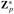

|
|
< Day Day Up > |
|
Since the practical applications of the DFT, such as signal processing, demand the utmost speed, this section examines two efficient FFT implementations. First, we shall examine an iterative version of the FFT algorithm that runs in Θ(n lg n) time but has a lower constant hidden in the Θ-notation than the recursive implementation in Section 30.2. Then, we shall use the insights that led us to the iterative implementation to design an efficient parallel FFT circuit.
We first note that the for loop of lines 10 -13 of RECURSIVE-FFT involves computing the value twice. In compiler terminology, this value is known as a common subexpression. We can change the loop to compute it only once, storing it in a temporary variable t.
for k ← 0 to n/2 - 1
do
wn ← w wn
The operation in this loop, multiplying the twiddle factor by , storing the product into t, and adding and subtracting t from , is known as a butterfly operation and is shown schematically in Figure 30.3.
We now show how to make the FFT algorithm iterative rather than recursive in structure. In Figure 30.4, we have arranged the input vectors to the recursive calls in an invocation of RECURSIVE-FFT in a tree structure, where the initial call is for n = 8. The tree has one node for each call of the procedure, labeled by the corresponding input vector. Each RECURSIVE-FFT invocation makes two recursive calls, unless it has received a 1-element vector. We make the first call the left child and the second call the right child.
Looking at the tree, we observe that if we could arrange the elements of the initial vector a into the order in which they appear in the leaves, we could mimic the execution of the RECURSIVE-FFT procedure as follows. First, we take the elements in pairs, compute the DFT of each pair using one butterfly operation, and replace the pair with its DFT. The vector then holds n/2 2-element DFT's. Next, we take these n/2 DFT's in pairs and compute the DFT of the four vector elements they come from by executing two butterfly operations, replacing two 2-element DFT's with one 4-element DFT. The vector then holds n/4 4-element DFT's. Wecontinue in this manner until the vector holds two (n/2)-element DFT's, which we can combine using n/2 butterfly operations into the final n-element DFT.
To turn this observation into code, we use an array A[0 ‥n - 1] that initially holds the elements of the input vector a in the order in which they appear in the leaves of the tree of Figure 30.4. (We shall show later how to determine this order, which is known as a bit-reversal permutation.) Because the combining has to be done on each level of the tree, we introduce a variable s to count the levels, ranging from 1 (at the bottom, when we are combining pairs to form 2-element DFT's) to lg n (at the top, when we are combining two (n/2)-element DFT's to produce the final result). The algorithm therefore has the following structure:
1 for s ← 1 to lg n 2 do for k ← 0 to n - 1 by 2s 3 do combine the two 2s-1-element DFT's in A[k ‥k + 2s-1 - 1] and A[k + 2s-1 ‥k + 2s - 1] into one 2s-element DFT in A[k ‥k + 2s - 1]
We can express the body of the loop (line 3) as more precise pseudocode. We copy the for loop from the RECURSIVE-FFT procedure, identifying y[0] with A[k ‥ k + 2s-1 - 1] and y[1] with A[k + 2s-1 ‥k + 2s - 1]. The twiddle factor used in each butterfly operation depends on the value of s; it is a power of wm, where m = 2s. (We introduce the variable m solely for the sake of readability.) We introduce another temporary variable u that allows us to perform the butterfly operation in place. When we replace line 3 of the overall structure by the loop body, we get the following pseudocode, which forms the basis of the parallel implementation we shall present later. The code first calls the auxiliary procedure BIT-REVERSE-COPY (a, A) to copy vector a into array A in the initial order in which we need the values.
ITERATIVE-FFT (a) 1 BIT-REVERSE-COPY (a, A) 2 n ← length[a] ▹ n is a power of 2. 3 for s ← 1 to lg n 4 do m ← 2s 5 ωm ← e2πi/m 6 for k ← 0 to n - 1 by m 7 do ω ← 1 8 for j ← 0 to m/2 - 1 9 do t ← ωA[k + j + m/2] 10 u ← A[k + j] 11 A[k + j] ← u + t 12 A[k + j + m/2] ← u - t 13 ω ← ω ωm
How does BIT-REVERSE-COPY get the elements of the input vector a into the desired order in the array A? The order in which the leaves appear in Figure 30.4 is a bit-reversal permutation. That is, if we let rev(k) be the lg n-bit integer formed by reversing the bits of the binary representation of k, then we want to place vector element ak in array position A[rev(k)]. In Figure 30.4, for example, the leaves appear in the order 0, 4, 2, 6, 1, 5, 3, 7; this sequence in binary is 000, 100, 010, 110, 001, 101, 011, 111, and when we reverse the bits of each value we get the sequence 000, 001, 010, 011, 100, 101, 110, 111. To see that we want a bit-reversal permutation in general, we note that at the top level of the tree, indices whose low-order bit is 0 are placed in the left subtree and indices whose low-order bit is 1 are placed in the right subtree. Stripping off the low-order bit at each level, we continue this process down the tree, until we get the order given by the bit-reversal permutation at the leaves.
Since the function rev(k) is easily computed, the BIT-REVERSE-COPY procedure can be written as follows.
BIT-REVERSE-COPY(a, A) 1 n ← length[a] 2 for k ← 0 to n - 1 3 do A[rev(k)] ← ak
The iterative FFT implementation runs in time Θ(n lg n). The call to BIT-REVERSE-COPY(a, A) certainly runs in O(n lg n) time, since we iterate n times and can reverse an integer between 0 and n - 1, with lg n bits, in O(lg n) time. (In practice, we usually know the initial value of n in advance, so we would probably code a table mapping k to rev(k), making BIT-REVERSE-COPY run in Θ(n) time with a low hidden constant. Alternatively, we could use the clever amortized reverse binary counter scheme described in Problem 17-1.) To complete the proof that ITERATIVE-FFT runs in time Θ(n lg n), we show that L(n), the number of times the body of the innermost loop (lines 8 -13) is executed, is Θ(n lg n). The for loop of lines 6 -13 iterates n/m = n/2s times for each value of s, and the innermost loop of lines 8 -13 iterates m/2 = 2s-1 times. Thus,
We can exploit many of the properties that allowed us to implement an efficient iterative FFT algorithm to produce an efficient parallel algorithm for the FFT. We will express the parallel FFT algorithm as a circuit that looks much like the comparison networks of Chapter 27. Instead of comparators, the FFT circuit uses butterfly operations, as drawn in Figure 30.3(b). The notion of depth that we developed in Chapter 27 applies here as well. The circuit PARALLEL-FFT that computes the FFT on n inputs is shown in Figure 30.5 for n = 8. It begins with a bit-reverse permutation of the inputs, followed by lg n stages, each stage consisting of n/2 butterflies executed in parallel. The depth of the circuit is therefore Θ(lg n).
The leftmost part of the circuit PARALLEL-FFT performs the bit-reverse permutation, and the remainder mimics the iterative ITERATIVE-FFT procedure. Because each iteration of the outermost for loop performs n/2 independent butterfly operations, the circuit performs them in parallel. The value of s in each iteration within ITERATIVE-FFT corresponds to a stage of butterflies shown in Figure 30.5. Within stage s, for s = 1, 2,..., lg n, there are n/2s groups of butterflies (corresponding to each value of k in ITERATIVE-FFT), with 2s-1 butterflies per group (corresponding to each value of j in ITERATIVE-FFT). The butterflies shown in Figure 30.5 correspond to the butterfly operations of the innermost loop (lines 9 -12 of ITERATIVE-FFT). Note also that the twiddle factors used in the butterflies correspond to those used in ITERATIVE-FFT: in stage s, we use , where m = 2s.
Show how ITERATIVE-FFT computes the DFT of the input vector (0, 2, 3, -1, 4, 5, 7, 9).
Show how to implement an FFT algorithm with the bit-reversal permutation occurring at the end, rather than at the beginning, of the computation. (Hint: Consider the inverse DFT.)
How many times does ITERATIVE-FFT compute twiddle factors in each stage? Rewrite ITERATIVE-FFT to compute twiddle factors only 2s-1 times in stage s.
Suppose that the adders within the butterfly operations of the FFT circuit sometimes fail in such a manner that they always produce a zero output, independent of their inputs. Suppose that exactly one adder has failed, but that you don't know which one. Describe how you can identify the failed adder by supplying inputs to the overall FFT circuit and observing the outputs. How efficient is your method?
Show how to multiply two linear polynomials ax + b and cx + d using only three multiplications. (Hint: One of the multiplications is (a + b) · (c + d).)
Give two divide-and-conquer algorithms for multiplying two polynomials of degree-bound n that run in time Θ(nlg 3). The first algorithm should divide the input polynomial coefficients into a high half and a low half, and the second algorithm should divide them according to whether their index is odd or even.
Show that two n-bit integers can be multiplied in O(nlg 3) steps, where each step operates on at most a constant number of 1-bit values.
A Toeplitz matrix is an n × n matrix A = (aij) such that aij = ai-1, j-1 for i = 2, 3,..., n and j = 2, 3,..., n.
Is the sum of two Toeplitz matrices necessarily Toeplitz? What about the product?
Describe how to represent a Toeplitz matrix so that two n × n Toeplitz matrices can be added in O(n) time.
Give an O(n lg n)-time algorithm for multiplying an n × n Toeplitz matrix by a vector of length n. Use your representation from part (b).
Give an efficient algorithm for multiplying two n × n Toeplitz matrices. Analyze its running time.
We can generalize the 1-dimensional Discrete Fourier Transform defined by equation (30.8) to d dimensions. Our input is a d-dimensional array whose dimensions are n1, n2,..., nd, where n1n2 · · · nd = n. We define the d-dimensional Discrete Fourier Transform by the equation
for 0 ≤ k1 < n1, 0 ≤ k2 < n2,..., 0 ≤ kd < nd.
Show that we can compute a d-dimensional DFT by computing 1-dimensional DFT's on each dimension in turn. That is, first compute n/n1 separate 1-dimensional DFT's along dimension 1. Then, using the result of the DFT's along dimension 1 as the input, compute n/n2 separate 1-dimensional DFT's along dimension 2. Using this result as the input, compute n/n3 separate 1-dimensional DFT's along dimension 3, and so on, through dimension d.
Show that the ordering of dimensions does not matter, so that we can compute a d-dimensional DFT by computing the 1-dimensional DFT's in any order of the d dimensions.
Show that if we compute each 1-dimensional DFT by computing the Fast Fourier Transform, the total time to compute a d-dimensional DFT is O(n lg n), independent of d.
Given a polynomial A(x) of degree-bound n, its tth derivative is defined by
From the coefficient representation (a0, a1,..., an-1) of A(x) and a given point x0, we wish to determine A(t)(x0) for t = 0, 1,..., n - 1.
Given coefficients b0, b1,..., bn-1 such that
show how to compute A(t)(x0), for t = 0, 1,..., n - 1, in O(n) time.
Explain how to find b0, b1,..., bn-1 in O(n lg n) time, given for k = 0, 1,..., n - 1.
Prove that
where f(j) = aj · j! and
Explain how to evaluate  for k = 0, 1,..., n - 1 in O(n lg n) time. Conclude that all nontrivial derivatives of A(x) can be evaluated at x0 in O(n lg n) time.
for k = 0, 1,..., n - 1 in O(n lg n) time. Conclude that all nontrivial derivatives of A(x) can be evaluated at x0 in O(n lg n) time.
We have observed that the problem of evaluating a polynomial of degree-bound n - 1 at a single point can be solved in O(n) time using Horner's rule. We have also discovered that such a polynomial can be evaluated at all n complex roots of unity in O(n lg n) time using the FFT. We shall now show how to evaluate a polynomial of degree-bound n at n arbitrary points in O(n lg2 n) time.
To do so, we shall use the fact that we can compute the polynomial remainder when one such polynomial is divided by another in O(n lg n) time, a result that we assume without proof. For example, the remainder of 3x3 + x2 - 3x + 1 when divided by x2 + x + 2 is
(3x3 + x2 - 3x + 1) mod (x2 + x + 2) = -7x + 5.
Given the coefficient representation of a polynomial and n points x0, x1,..., xn-1, we wish to compute the n values A(x0), A(x1),...,(A(xn-1). For 0 ≤ i ≤ j ≤ n - 1, define the polynomials and Qij (x) = A(x) mod Pij(x). Note that Qij (x) has degree at most j - i.
Prove that A(x) mod (x - z) = A(z) for any point z.
Prove that Qkk(x) = A(xk) and that Q0,n-1(x) = A(x).
Prove that for i ≤ k ≤ j, we have Qik (x) = Qij (x) mod Pik(x) and Qkj(x) = Qij (x) mod Pkj(x).
Give an O(n lg2 n)-time algorithm to evaluate A(x0), A(x1),..., A(xn-1).
As defined, the Discrete Fourier Transform requires the use of complex numbers, which can result in a loss of precision due to round-off errors. For some problems, the answer is known to contain only integers, and it is desirable to utilize a variant of the FFT based on modular arithmetic in order to guarantee that the answer is calculated exactly. An example of such a problem is that of multiplying two polynomials with integer coefficients. Exercise 30.2-6 gives one approach, using a modulus of length Ω(n) bits to handle a DFT on n points. This problem gives another approach that uses a modulus of the more reasonable length O(lg n); it requires that you understand the material of Chapter 31. Let n be a power of 2.
Suppose that we search for the smallest k such that p = kn + 1 is prime. Give a simple heuristic argument why we might expect k to be approximately lg n. (The value of k might be much larger or smaller, but we can reasonably expect to examine O(lg n) candidate values of k on average.) How does the expected length of p compare to the length of n?
Let g be a generator of , and let w = gk mod p.
Argue that the DFT and the inverse DFT are well-defined inverse operations modulo p, where w is used as a principal nth root of unity.
Argue that the FFT and its inverse can be made to work modulo p in time O(n lg n), where operations on words of O(lg n) bits take unit time. Assume that the algorithm is given p and w.
Compute the DFT modulo p = 17 of the vector (0, 5, 3, 7, 7, 2, 1, 6). Note that g = 3 is a generator of .
|
|
< Day Day Up > |
|